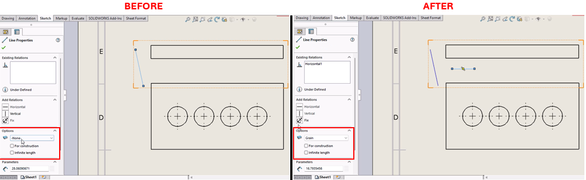

Set Layer & Draw Line in SolidWorks Drawing
Description
This macro sets the specified layer as the current layer in the active SolidWorks drawing document and adds a sketched line on that layer. It automates the process of layer management and drawing creation, ensuring that all subsequent sketched entities are added to the specified layer. This is particularly useful for organizing different sketch entities in separate layers.
System Requirements
- SolidWorks Version: SolidWorks 2014 or newer
- Operating System: Windows 7 or later
Pre-Conditions
Note
- The active document must be a drawing document.
- The specified layer (
Grain) must already exist in the active drawing.
Results
Note
- The specified layer (
Grain) will be set as the active layer. - A new sketch line will be created on the specified layer at the given coordinates.
VBA Macro Code
' Disclaimer:
' The code provided should be used at your own risk.
' Blue Byte Systems Inc. assumes no responsibility for any issues or damages that may arise from using or modifying this code.
' For more information, visit [Blue Byte Systems Inc.](https://bluebyte.biz).
Option Explicit
' Define necessary variables for SolidWorks application, drawing, and layer manager
Dim swApp As Object ' Application object (SldWorks)
Dim pDrawing As Object ' Active drawing document object
Dim pLayerMgr As Object ' Layer manager object
Dim pSketchSegment1 As Object ' Sketch segment object (line)
Sub main()
' Initialize SolidWorks application
Set swApp = Application.SldWorks
' Get the active drawing document
Set pDrawing = swApp.ActiveDoc
' Check if the active document is a drawing
If pDrawing Is Nothing Then
swApp.SendMsgToUser "No active drawing document found. Please open a drawing and try again."
Exit Sub
End If
' Get LayerMgr object from the active drawing document
Set pLayerMgr = pDrawing.GetLayerManager
' Check if LayerMgr was obtained successfully
If pLayerMgr Is Nothing Then
swApp.SendMsgToUser "Failed to get Layer Manager. Make sure you are in a drawing document."
Exit Sub
End If
' Set "Grain" as the current layer
Dim res As Boolean
res = pLayerMgr.SetCurrentLayer("Grain")
' Check if the layer activation was successful
If res = False Then
swApp.SendMsgToUser "Error activating the layer 'Grain'. Please ensure the layer exists in the drawing."
Exit Sub
End If
' Enable adding objects to the database without displaying them
pDrawing.SetAddToDB True
' Create a line sketch on the active layer
Set pSketchSegment1 = pDrawing.CreateLine2(0.15, 0.25, 0, 0.45, 0.25, 0)
' Check if the line was created successfully
If pSketchSegment1 Is Nothing Then
swApp.SendMsgToUser "Failed to create the sketch line. Please check the sketch coordinates."
pDrawing.SetAddToDB False
Exit Sub
End If
' Disable adding objects to the database
pDrawing.SetAddToDB False
' Clear all selections in the drawing
pDrawing.ClearSelection
' Notify user of successful operation
swApp.SendMsgToUser "Layer set and line created successfully on the active layer."
End Sub
Macro
You can download the macro from here
Customization
Need to modify the macro to meet specific requirements or integrate it with other processes? We provide custom macro development tailored to your needs. Contact us.